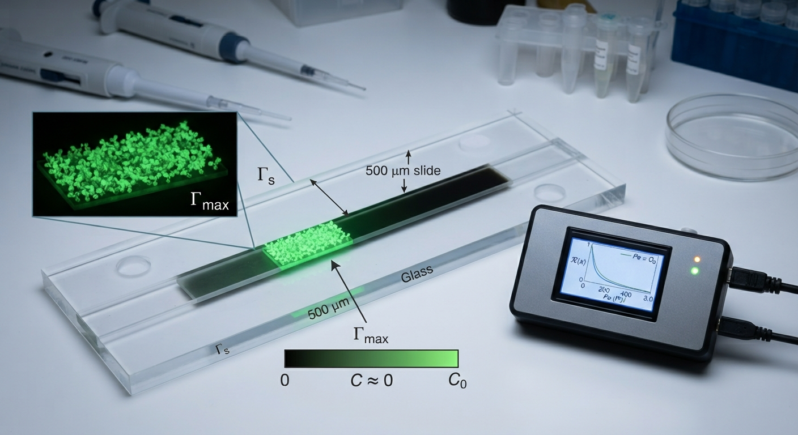

Valiant Scientific builds simulation and scientific machine learning tools for the systems where flow meets chemistry: microfluidic assays, reactors and catalytic surfaces. We turn first-principles physics and your experimental data into models you can design with.

Our models share one core: coupled fluid flow, species transport and surface or bulk reactions. That common foundation lets us move quickly across three closely related fields.
Quantitative models of assay devices and biological transport, from channel design to calibrating binding constants against measured signal.
Simulation-driven design and scale-up of chemical processes, with fast surrogate models for optimisation and control.
Linking surface kinetics to reactor-scale performance, so catalyst and support choices can be evaluated before they are built.
Our engineers and scientists bring years of experience in numerical analysis, computational fluid dynamics, computational statistics and machine learning, backed by solid software engineering and system integration.
Coupled flow, transport and reaction solvers packaged as digital twins for real-time monitoring and optimisation of devices and processes.
Neural networks constrained by conservation laws and kinetic models, for fast surrogates and for recovering rate constants and parameters from sparse experimental data.
Scalable parallel solvers for large parameter sweeps, uncertainty quantification and design optimisation that would be impractical on a workstation.
Pipelines that connect geometry, simulation output and lab measurements, from STL files to HDF5 and Zarr datasets ready for analysis and training.
We pair rigorous physics with machine learning. That gives predictions you can trust outside the training data, at a speed that makes design exploration practical.
Build first-principles models of the governing physics: advection–diffusion, reaction kinetics, adsorption isotherms and heat transfer.
Calibrate against your measurements with physics-informed learning, identifying unknown parameters and quantifying their uncertainty.
Deploy fast surrogates and HPC workflows to explore designs, optimise operating conditions and support decisions in real time.
Tell us about your device, reactor or catalyst and we'll scope how modelling can help.